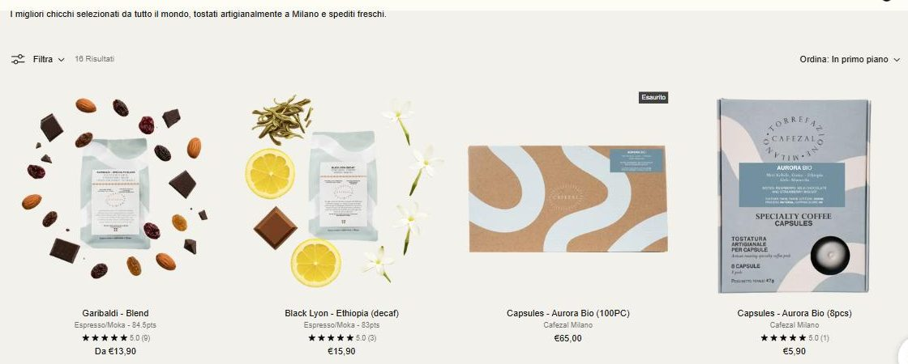
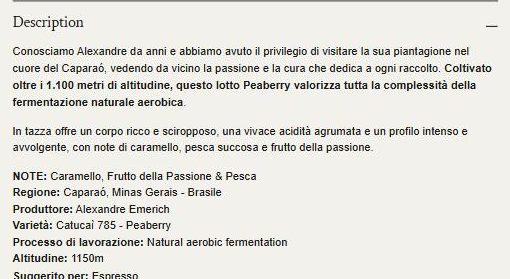

Cafezal: the farmers have names. The catalogue shows a score.
Cafezal's product pages tell real stories — Alexandre in Caparaó, Abdo in Ethiopia, years of partnership, a farm visit. The homepage and the catalogue, where people actually choose, show a name, a score out of 100 and a price. The relationship is the brand. It's one click too deep.
Reviewed 18 September 2026, fully re-checked 26 September 2026 · Scope: homepage, the coffee catalogue (16 products), four product pages, packaging photography and the Milano Coffee Academy section at cafezal.it, compared with two specialty roasters. Public material only: no interviews, no private information. Cafezal's site is in Italian; quotes are given in the original with my English translation in brackets.
This is speculative work, not a client relationship
I picked Cafezal Milano and this gap on my own initiative — no engagement, no affiliation, nothing commissioned, nothing beyond what's public on their site. It exists to show how I'd approach a Brand Platform, not to claim I was hired for one. If Cafezal would rather this page not exist, email me and it comes down.
Correction
The first version of this page (18 September) said the sourcing story never reached the product pages, and misread details from a blurred packaging photo. Both were wrong: the product pages do carry origin, producer, variety and process, and the packaging matches them. The finding below is the corrected one — narrower, and more useful.
Cafezal has the most specific story in Milan specialty coffee, and hides it behind the most generic shelf.
Every product page names a producer, a region, a variety, a process, an altitude — and several tell how long Cafezal has worked with that farmer. That is exactly what “From Farmers to Coffee Lovers” promises. But the catalogue grid, where a buyer compares 16 coffees, shows only a name, a brew method, a score and a price, and the homepage talks about passion and craft in general terms. A competitor in Florence puts origin and tasting notes on the card itself. Cafezal already has better material; it just isn't where the decision happens.
Where the brand stands today, in four categories.
Sourcing story (exists)
Sourcing story (where people choose)
Packaging & product pages
Language consistency
Splitting “sourcing story” into two rows is the point: the same brand scores completely differently depending on whether you're on a product page or on the shelf that leads to it.
The catalogue: a name, a score, a price.

The catalogue opens with “I migliori chicchi selezionati da tutto il mondo, tostati artigianalmente a Milano e spediti freschi.” (“The best beans selected from around the world, roasted by hand in Milan and shipped fresh.”) Then 16 cards: “Garibaldi – Blend · Espresso/Moka – 84.5pts · da €13,90.” “Black Lyon – Ethiopia (decaf) · 83pts · €15,90.” Names like Pink Jaguar, Kilimanjaro, Botero and Sinfonia. For someone who doesn't read cupping scores, nothing on the shelf says why one bag should be chosen over another — or who grew it.
One click deeper: named farmers, years of partnership.

On the Sinfonia page: “Conosciamo Alexandre da anni e abbiamo avuto il privilegio di visitare la sua piantagione nel cuore del Caparaó” (“We have known Alexandre for years and had the privilege of visiting his plantation in the heart of Caparaó”). On Aurora Bio, the producer Abdo Abamecha works with a relative who is “partner Cafezal dal 2021” (“a Cafezal partner since 2021”). Each page lists notes, region, producer, variety, process and altitude. The packaging carries the same structure. This is the most specific sourcing story I found among Milan roasters — and it is written for people who have already clicked.
What the shelf and homepage say
Passion for coffee in its modern form, quality, craft, transparency. A score out of 100 and a price.
What the product pages say
Alexandre, whose farm in Caparaó the team visited. Abdo, a partner family since 2021. Exact lots, processes and altitudes.
The specificity is table stakes. Where you show it isn't.
| Brand | Lead message | Proof on the page | Who it's for |
|---|---|---|---|
| Cafezal | “From Farmers to Coffee Lovers” — specialty roasters, Milan; academy and five locations. | Named producers and full lot data on product pages; 5.0 ratings on several products | Home brewers, cafés (B2B), learners (academy) |
| Ditta Artigianale | “The artisans of specialty coffee.” | Origin, process and tasting notes printed on every product card | Home brewers and specialty fans |
| Il Cafetero | “Dalla Terra alla Tazza” (“From the Earth to the Cup”) — selected specialty coffees roasted in Milan. | Coffees grouped by brew method and tasting boxes | Daily home drinkers |
All three roasters say farm-to-cup in one form or another. Only Ditta Artigianale puts the proof on the card — “Honduras Finca El Puente · washed · Miele, Sciroppo d'acero, Caramello” (honey, maple syrup, caramel). Cafezal has richer material than either competitor: named people and relationships, not just lot data. On the shelf, it shows less than both.
Three customers, one catalogue.
The specialty regular
Knows what 85 points means and reads the product page anyway. Already well served — this is who the current site is written for.
The gift buyer and the curious newcomer
Lands on the grid from Instagram or a Smeg subscription, doesn't read scores, and chooses by the first human reason they see. Today the shelf gives them a name and a number. A producer's name and one line of story would give them a reason.
The café and the academy student
Cafezal also sells to businesses and teaches at the Milano Coffee Academy. Both buy expertise and trust in sourcing. The farmer relationships are the proof they need, and they're currently scattered across individual product pages.
Not a critique — a draft of the real deliverable.
A first pass built only from Cafezal's own published words — nothing invented.
Draft positioning statement
“Every bag has a name on it — the farmer's.”
It turns “From Farmers to Coffee Lovers” from a slogan into a rule the shelf can visibly keep, because the names already exist on every product page.
The card, before and after (real data)
Now: “Sinfonia – Brasile · Espresso/Moka – 85pts · €16,90”
With the page's own facts on the card: “Sinfonia — Alexandre Emerich, Caparaó, Brazil. Caramel, passion fruit, peach. 85 points · €16,90.” Same data, moved up one level to where the choice is made.
Language
The homepage mixes English headings — “Let customers speak for us,” “From Farmers to Coffee Lovers” — into Italian copy, and the meta description stays abstract: “Siamo guidati dalla passione per il caffè nella sua concezione moderna” (“We are driven by a passion for coffee in its modern form”). A Brand Platform would set one language per market and one rule: every claim is followed by a name, a place or a number.
If this were a paid engagement, it would start here.
This week
- Add the producer's name and region to every catalogue card.
- Add the three tasting notes under the name on each card.
- Pick one language for homepage headings.
This month
- Build a “Our farmers” page from the stories already on the product pages — Alexandre, Abdo and the rest — with how long Cafezal has worked with each.
- Link each producer from the homepage “From Farmers to Coffee Lovers” section.
- Use the same producer line on Academy and B2B pages.
This quarter
- Make “name, place, number” the copy rule for packaging, shelf cards, product pages and café menus.
- Film or photograph one farm visit per season and tie it to the matching product.
- Measure whether cards with producer names convert better than cards without — it's a two-week test.
What this spec version leaves out: a real Brand Platform includes stakeholder interviews, a full competitive scan and a visual-direction document for a designer. None of that happened here; the drafts above are built only from Cafezal's own published text.

Want this kind of read on your own brand?
€1,200 · 1 week · no obligation beyond the audit itself